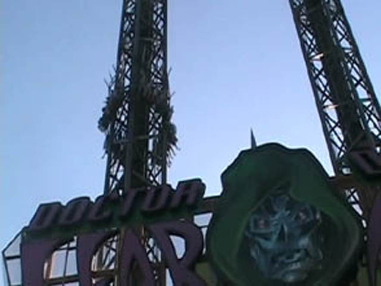
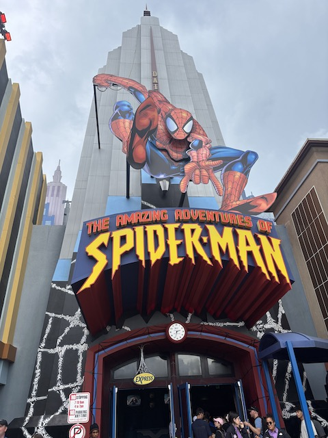
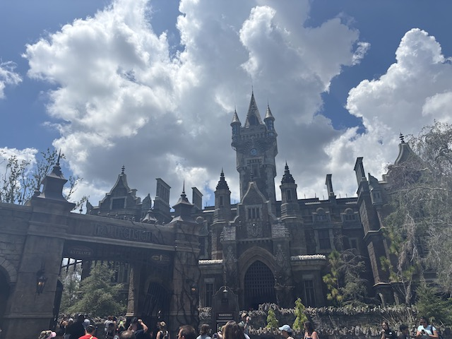
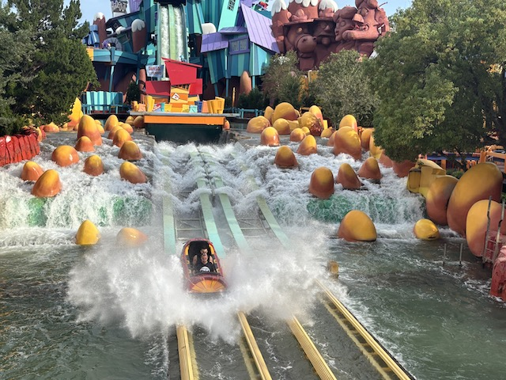
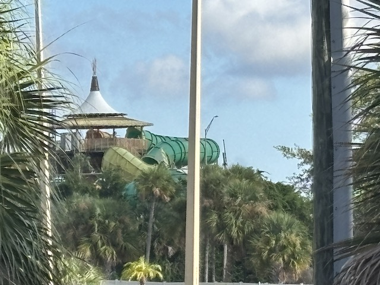
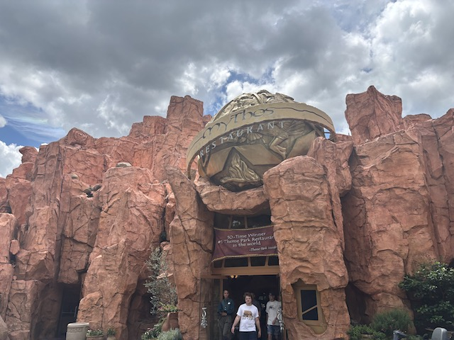
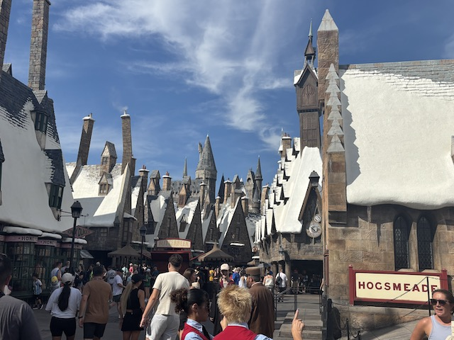
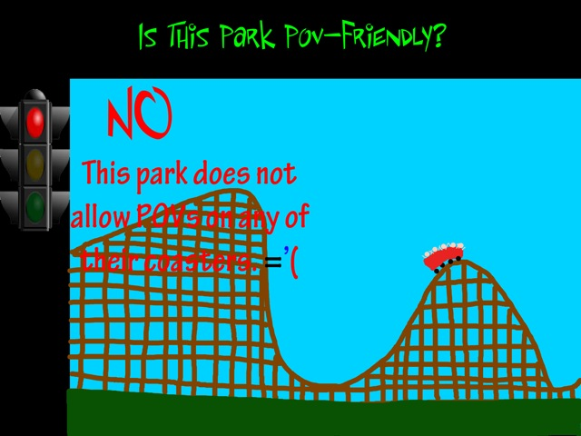

Consisting of three fantastic parks, the Universal Orlando Resort features a ton of fun stuff to do. Aside from some amazing rollercoasters, they've also got really cool dark rides, great food, top notch theming, soaking water rides, and more. In the original Universal Studios Florida, you can mainly find a bunch of 3D shows with some cool rides in between. And in 2009, they built a big rollercoaster called Rockit, and while thats gone now, they're building a far bigger ride in its place that'll 99.9% certsain will be better. But for me, Revenge of the Mummy and Men in Black is what made Universal Studios Florida. Then in 1999, Universal Studios Florida got its brother park, Islands of Adventures. Now when it first opened, it was EXTREMELY BADASS!!! And while it's still fun, yeah. That park definetly took a big hit over the years. I mean, the park opened with 5 Themed Lands, 3 Awesome B&Ms, a bunch of completely kickass dark rides, and more. But recently, some of that stuff...dissapeared. But I'll scream and rant about that later. But yeah, The Wizarding World of Harry Potter Area came to the park and was a HUGE hit with the General Public. And while Potterheads are in love with the new area, and it seems fun, the effect it's had on the park has...not been good. For reasons that will be discussed later. And since then, IOA jas a big rebound, with the addition of some certain coasers that....yeah. I will gush about later. And finally, they just recently opened Epic Unioverse a couple miles away last year in 2025, and was fortunate to have gonme there already. And already that park is off to a great start with not only an amazing coaster, but on top of that, some amazing dark rides, great family coasters, phenomenal theming, and so much more. And I'm sure Epic Universe will get even better with time. And hey. Even without all the awesome theming, the rides themselves are very high quality and top notch. I know uit has been concerning with Disney buying certain IPs that have had homes at Universl Orlando. Mainly Marvel and FOX. Though it seems t be going well for now at least. Universal Studios Florida, Islands of Adventures, and Epic Universe are three fantastic theme parks. And when you roll them up into one resort, it's a lot of fun. I'll tell you that much. I'd recommend coming out to the Universal Orlando Resort as well as the Disney World Resort. It has a ton to do, and several world class rides you don't want to miss.
While the Universal Orlando Resort is doing a great job in most of the other departments, they aren't doing that great in the flat ride department. Mostly, that's because they barely have any flat rides at all. But the one that they do have, like everything else in the park, is really awesome. They have a space shot called Dr. Dooms Fearfall. And let me tell you this, it is by far, the best Space Shot I have been on. When waiting to launch, they say some stuff that really adds to the ride and definetly increases the anticipation. The launch itself seems much more powerful than your average Space Shot. And not to mention you get a FANTASTIC view of the Hulk. But aside from Dr. Doom, there's not much else. Dragon Racer Ralley at Epic Universe looked fun. But....yeah. Time and crowds stopped me from doing that. They also have multiple carousels, a Dumbo type of ride, and some teacups. So while the Universal Orlando Resort may seriously lack in the quantity of flat rides, the one they do have does not lack in quality.

Dr. Doom is without a doubt, the greatest space shot Incrediblecoasters has ever done.
Dark Rides
The Universal Orlando Resort is without a doubt, hauling ass in the Dark Ride Department. It's so good in this department, that it's on the same level as the Disney Parks. Well first off, we'll start off with one of the greatest dark rides Incrediblecoasters has ever been on. Spiderman. You start off by getting in the car and putting on your 3D Glasses. And then, from there, you go off with Spiderman to go fight some villians. Then after being punched by a water villian, we feel wet. So we go hang out by a brick wall. But then Octoman comes out and sprays fire at us. You may think at this point that this is a Six Flags Dark Ride. But then the level of detail and effects reminds you that this is a Universal Dark Ride. Then after fighting more villains, you see an explosion and the whole room lights up. Cause remember, this simulator runs on a track. Then we get scared of Octoman and start to climb up a building. Then we fly around the city with Spiderman and do more Villain Fighting in the sky. While in the sky, Water Villian sprays us with mist, which makes us very moist. Then we jump to a building with Spiderman. But we don't make it and start to fall to the ground. And unlike most simulators, you actually feel like you're falling. Luckily, Spiderman comes and saves us since everybody gets one. While getting saved, we see that the sewers is not an exit. We then see that Spiderman has tied up all the villians and then takes out a camera to take our picture with. Another dark ride worth gushing over would be Monsters Unchained. Not only due to a totally badass storyline that's freaking themed to the classic Universal Horror Monsters, but also has some SERIOUSLY impressive animatronics as well as using the Robot Arm technology, allowing it to have some really cool motion and move like on Forbidden Journey. This too is one of my favorite dark rides, and just goes to show you how strong Epic Universe started out with. Another great dark ride that isn't quite as good as Spiderman, but is still awesome would be Men in Black. Once you get in your cars, you go out and shoot aliens. And not only are the aliens, pretty damn realistic looking, but you can also screw up other cars by making them spin out and not get any points. Now I may not be a Shooting Dark Ride Junkie, but I can safely say that Men in Black kicks ass. And while this one isn't a personal favorite of mine, I have to talk about Battle at the Ministry. This is a ark ride at Epic Universe that people just LOVE!!!! And yeah. It has good motion, really nice animatronics, and probably the best storyline on ANY Harry Potter ride. Seriously. Just seeing that evil loathsome c*nt Dolores Umbridge be sent to Azkaban at the end made it top notch and an amazing dark ride. Thumbs up for that ALONE! =) And there are so many other dark rides. They have the Transformers ride at Universal Studios Florida, which uses the same technology asSpiderman. It's not quite as good, but still a great dark ride. They've also got a Cat in the Hat Dark Ride that from what I've heard, sounds really awesome's pretty fun. Even if.....yeajh. Those are some creepy animatronics. I guess its fun in a "So bad it's good" way. Though thats probably just the competition talking, being surrounded by so many amazing dark rides, . They've also got a Terminator 3D show, and unlike Universal Studios Hollywood, they still have their E.T. So check that out for a fun retro time. There's the Simpsons Ride, which is a very fun simulator. There's the Despicable Me Minion Mayhem ride. That's fun. And while I didn't do either of them here, I did ride the clones of Forbidden Journey and Mario Kart: Bowser Challenge at Universal Studios Hollywood, and can confirm that both those rides are a ton of fun that I would've bothered with here if not for having both at home combined with super long lines for both. Oh, and there's also some Yoshi ride at Epic Universe as well, apparently.

Best Simulator Ever and one of the best Dark Rides ever.

Another favorite dark ride you should not ignore.
Water Rides
I can confirm that the Universal Orlando Resort, particuarly Islands of Asventures, has an AMAZING water ride collection. First up, Dudly Doo Rights Ripsaw Falls. THIS RIDE IS F*CKING AWESOME!!! Unironically, my favorite water ride. Yeah. This is so good that its even better than Splash Mountain (the original Splash Mtn, not Tianas Bayou). The theming is GREAT, the drops are some of the best on any log flume, and this ride SOAKS YOU!!! YOU WILL NOT BE SPARED ON THIS RIDE!!! It just is such a fun experience. So glad I managed to experience that. Next up, Popeye and Bluto's Bilge Rat Barges. This is the resort's river rapids ride. And while this isn't my favorite rapids ride (that honor goes to River Quest), it still is a GREAT rapids ride. Much like on Dudley Doo Rights, Popeye has some great cartoon theming (to Popeye obviously). And while this one doesn't have any drops, its a very fast rapids rode, with a lot of rapids, and also like Dudley Doo Rights, YOU WILL GET SOAKED!!! So yeah. Bring a poncho if you want to check out the water rides here. Moving onto the water rides I did not do, they have Jurrasic Park. While it seemed much better than the California one, I never rode it due to both laziness, and the fact that I had a similar ride over at Universal Studios Hollywood. And over at Epic Universe, they have a Splash Battle over in the Howq to Train Your Dragon land. That looks very fun. And yeah. Needless to say, you're getting wet on any of the water rides here!

Such an amazing log flume! Do not miss!
Water Park
(Volcano Bay)
I never visited the Universal Orlando Resort's water park, Volcano Bay. But GOD DAMN!!! This place looks AWESOME!!! I really hope to come here and check it out on my next visit to Florida.

Dining
I'll tell you this. The Universal Orlando Resort has a lot of food in the park. The resteraunts that you can choose from are endless. For lunch, I chose to eat at Mythos, which has frequently been rated the best amusement park resteraunt. And I'm going to have to agree. The food at Mythos is pretty good. It's Mediterranian food. Thats pretty unique, and very good. I'm honestly kind of surprised that it's still here. Mythos feels like the last piece of the original Lost Continent land that wasn't killed by the Wizaeding World of Harry Potter. Probably due to how beloved Mythos is. Then again, Dueling Dragons was lso beloved. =( But hey. At least Mythos still lives on. I ate at Krusty Burger over at Universal Studios Florida. While it seems theres nothing unique about that, Buzz Cola there is surprisingly its own drink and not just Coke with a label. And....it's pretty good. Very happy about that. Meanwhile, over sat Epic Universe, I ate at Toadstool Cafe. This place is good. I wouldn't call it amazing. People mainly flock to it due to it being in the very popular Nintendo World. But it was still good. And there are tons more resteraunts to chexk out aceoss all 3 parks. And this isn't even getting into all the resteraubts in Universal Citywalk, which....I got to eat at the Hard Rock Cafe there, which was extremely good. So yeah. There's a ton of good options at the Universal Orlando Resort.

So happy this resteraunt still lives on.
Theming and Other Attractions
Here are the reviews of all the other stuff at the Universal Orlando Resort. For theming, it is everywhere. Everything at Islands of Adventures is practically theming. So as you can see, the entire resort is dripping with awesome high quality theming. Same goes for Epic Universe, They did SUCH a good job with that park. With Universal Studios Florida, they have Diagon Aey, which isreally nice, as well as just tons of great theming all over. As for other stuff to do at the Universal Orlando Resort, I am sure that they have some awesome shows in all 3 parks that everyone can go and enjoy. I know this is the area where Universal Studios Florida really shines as they have a ton of cool shows. I know the Horror Makeup Show wasn't too surprising since I semi-work in the industry (at the absolute lowest rung of the totem pole), but that still was cool to see. And theres just so much other cool stuff to check out in the 3 parks.

They really did an amazing job with all the Harry Potter stuff.
In Conclusion
The Universal Orlando Resort is a great place to go and have fun. Not only do they have a lot of stuff to do at the resort, but everything they do have is of really high quality. I mean, not only is it three amazing theme parks, but their coaster collection is phenoenal. They have some of the best coasters ever here. Which really makes them shine and stand out. And yeah. You can read me gush about those up there. But it's not only that. The dark rides I rode seemed of really high quality and of the best. Seriously, I can not heap enough praise on dsark rides as good as Spiderman and Monsters Unchained, let aloned all the other amazing dark rides they have. The food I ate at all 3 parks was delicous and filled me up well. And I'm sure that there's even more stuff for me to do. But remember, you won't be bored at the Universal Orlando Resort. You can get a thrill fix on Velocicoaster, get immersed into several worlds on so many great daek rides (Spidereman, Classic Universal Horror Monsters, Harry Potter, Nintendo, and so much more, get drenched on Dudly Doo Rights, or just go see a 3D show. There's so much to do at Universal Orlando Resort.
Enthusiast FAQs.
*Are there kiddy coaster restrictions? - Yes. Neither of the Roller Skaters have any restrictions, but Pterodactyl Flyers rewquires a kid to ride.

Tips
*If you want to conquer the entire resort, spend three days (four if you want to do Volcano Bay as well).
*Look out for the zipper Intolerance here.
*Take Advantage of Single Rider Lines
*While the lockers are free, they do have time limits and are quite expensive if you go beyond the time limit.
*Go in the Offseason to avoid crowds
*Do all of the theme patks here. They all are amazing in their own way.